១. និយមន័យ និងប្រភេទនៃរលកមេកានិច
+ រលក គឺជាការបញ្ជូនថាមពលពីចំណុចមួយទៅចំណុចមួយផ្សេងទៀតតាមរយៈមជ្ឈដ្ឋានណាមួយ ។ រលកមានលក្ខណៈជាចំណាំងផ្លាត ចំណាំងបែរ និងឌីប្រាក់ស្យុង ។
+ រលកមេកានិច ជារលកដែលដាលឆ្លងកាត់មជ្ឈដ្ឋានរូបធាតុ ( រឹង រាវ និងឧស្ម័ន ) ដែលល្បឿនរបស់វាអាស្រ័យនឹងមជ្ឈដ្ឋានដំណាល ។
+ រលកមានទម្រង់ពីរគឺ រលកទទឹង និងរលកបណ្តោយ ។
+ រលកទទឹង គឺជារលកដែលមានចលនាលំញ័រនៃចំណុចនីមួយៗក្នុងមជ្ឈដ្ឋានរូបធាតុ ដែលមានគន្លងកែងនឹងទិសដំណាល ( ដូចរូបខាងក្រោម ) ។
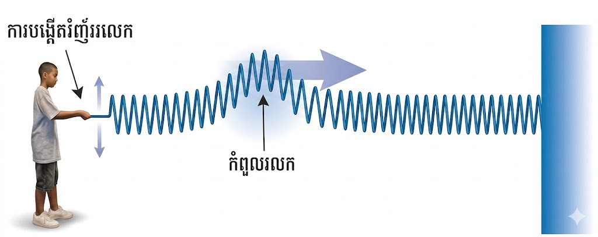
+ រលកបណ្តោយ គឺជាលំញ័រដែលផ្លាស់ទីស្របនឹងទិសនៃដំណាល ( ដូចរូបខាងក្រោម ) ។
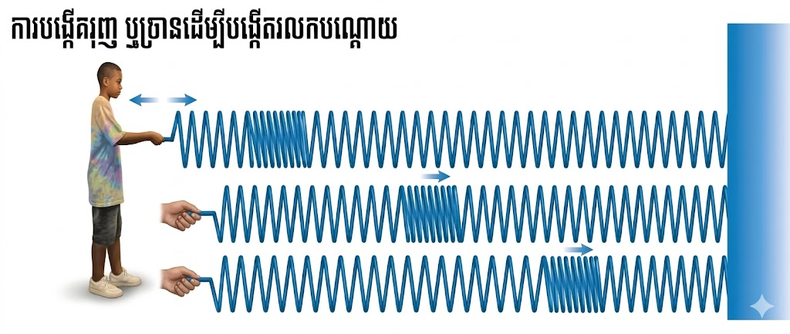
២. ភាពទូទៅនៃរលក
រលកទាំងពីរនេះត្រូវបានបង្កើតជាចលនាអាម៉ូនិចងាយ និងផ្លាស់ទីនៅក្នុងមជ្ឈដ្ឋានណាមួយ ។ តាងដោយអនុគមន៍ស៊ីនុយសូអ៊ីតមានរាង ( ដូចរូប ) និងសមីការទូទៅគឺ \( y = a \sin(\omega t + \phi) \) ។
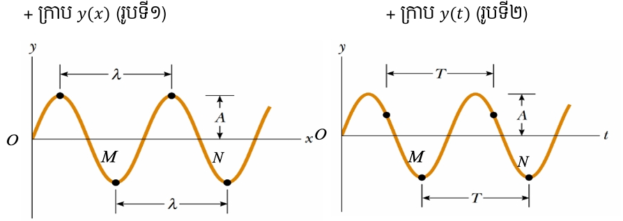
ដើម្បីសិក្សាអំពីរលកឲ្យមានភាពងាយស្រួល យើងត្រូវស្វែងយល់ពីមូលដ្ឋានគ្រឹះនៃការបង្កើតរលក និងមជ្ឈដ្ឋានដែលរលកដាល វាអាស្រ័យទៅនឹង ល្បឿនដំណាល អំព្លីទុត ជំហានរលក ខួប ប្រេកង់ និងផាសនៃរលក ។
កំណត់ចំណាំ៖
| \( \lambda \) | : | ជំហានរលក គិតជា \( (m) \) | |
| \( T \) | : | ខួបនៃរលក គិតជា \( (s) \) | |
| \( v \) | : | ល្បឿនដំណាលនៃរលក គិតជា \( (m/s) \) | |
| \( f \) | : | ប្រេកង់ គិតជា \( (Hz) \) ឬ \( (s^{-1}) \) | |
| \( k \) | : | ចំនួនរលក គិតជា \( (rad/m) \) | |
| \( d \) | : | ចម្ងាយចរនៃដំណាលរលក គិតជា \( (m) \) | |
| \( t \) | : | រយៈពេលដំណាល គិតជា \( (s) \) |
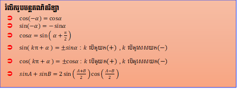
៣. សមីការរលកស៊ីនុយសូអ៊ីត
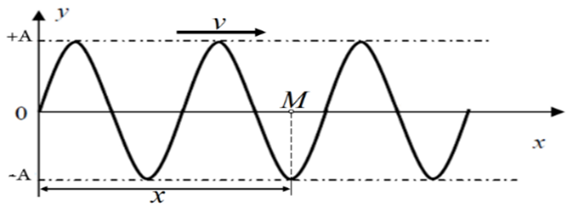
៤. គោលការណ៍តម្រួតនៃរលក
ជាទូទៅ៖ រលកពីរ ឬច្រើនដាលឆ្លងកាត់មជ្ឈដ្ឋានមួយ នោះតម្លៃសរុបនៃអនុគមន៍រលកត្រង់ចំនុចមួយហៅថា រលកតម្រួត ។ សមីការទូទៅ៖ \( y = y_1 + y_2 + y_3 + \dots + y_n \)
គោលការណ៍រលកតម្រួត៖ កាលណារលកពីរ ឬច្រើនដាលកាត់គ្នាក្នុងមជ្ឈដ្ឋានតែមួយ បម្លាស់ទីសរុបនៃរាល់ចំណុចណាក៏ដោយនៃរលក ស្មើនឹងផលបូកវ៉ិចទ័រនៃបណ្តាចំណុចបម្លាស់ទីរលកទោលទាំងនោះ ។ រលកបែបនេះហៅថា រលកលីនេអ៊ែ ឬ រលកតម្រួត ។
ដែល៖
នោះតម្រួតនៃរលកគឺ៖
៥. ករណីពិសេសនៃតម្រួតរលកពីរ
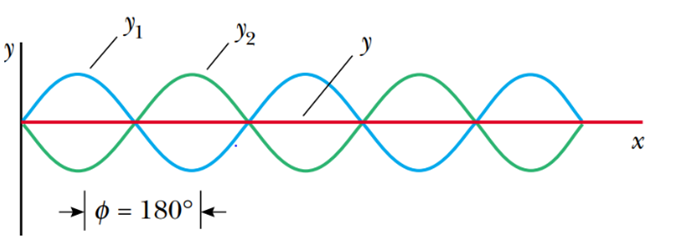
ឧបមាថា រលកពីរគឺ \( y_1 = a_1 \sin(\omega t + \phi_1) \) និង \( y_2 = a_2 \sin(\omega t + \phi_2) \) ដាលក្នុងមជ្ឈដ្ឋានមួយ នោះតម្រួតរលកទាំងពីរគឺ៖
ដែល \( a \) ជាអំព្លីទុតតម្រួត និង \( \phi \) ជាផាសតម្រួត ។
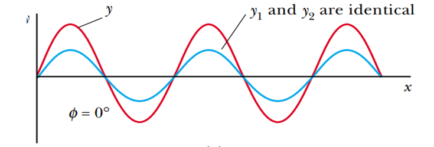
ករណីរលកពីរមានទិស ខួប ប្រេកង់ និងជំហានរលកដូចគ្នា តែផាសខុសគ្នា៖
+ ករណី \( a_1 = a_2 = a \)
តាមរូបមន្ត \( \sin A + \sin B = 2 \sin\left(\frac{A+B}{2}\right) \cos\left(\frac{A-B}{2}\right) \)
+ បើរលកទាំងពីរស្របផាសគ្នា (\( a_1 \neq a_2 \))
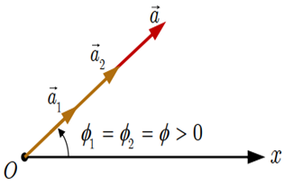
+ បើរលកទាំងពីរឈមផាសគ្នា៖
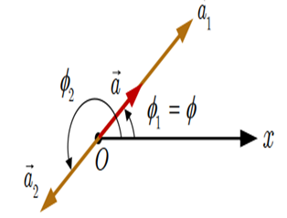
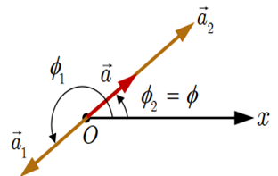
+ បើរលកទាំងពីរខ្នែងផាសគ្នា៖
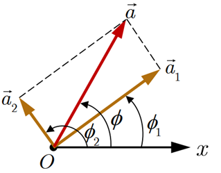
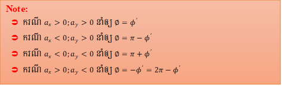
៦. រលកជញ្រ្ជុំ (Standing Waves)
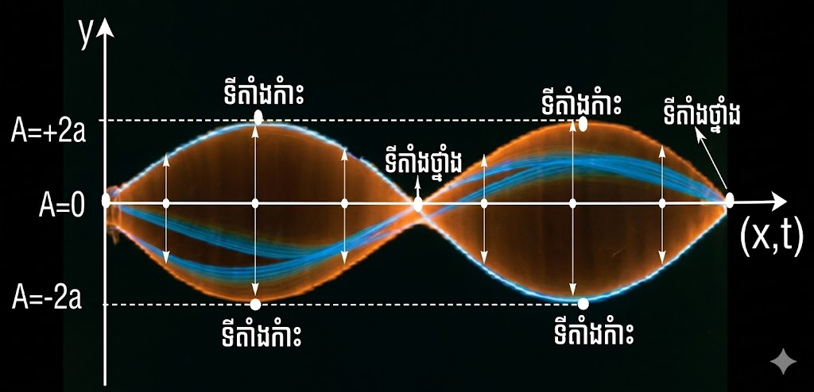
រលកជញ្រ្ជុំ៖ ជារលកដែលយោលត្រង់ទីតាំងថេរមួយ មានទីតាំងថ្នាំង និងពោះមិនផ្លាស់ប្តូរ ។ បង្កើតឡើងដោយតម្រួតនៃរលកពីរដែលមានអំព្លីទុត និងប្រេកង់ដូចគ្នា តែដាលក្នុងទិសដៅផ្ទុយគ្នា ។
+ ករណីទី១៖ បើ \( y_1 = a \sin(\omega t + kx) \) និង \( y_2 = a \sin(\omega t - kx) \)
ដែល \( A = 2 a \cos(kx) \) ជាអំព្លីទុតនៃរលកជញ្រ្ជុំ ។
+ ករណីទី២៖ បើ \( y_1 = a \sin(kx + \omega t) \) និង \( y_2 = a \sin(kx - \omega t) \)
ដែល \( A = 2 a \sin(kx) \) ជាអំព្លីទុតនៃរលកជញ្រ្ជុំ ។
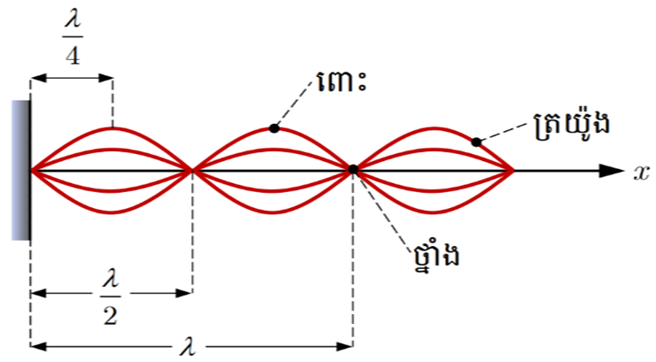
តារាងត្រីកោណមាត្រ
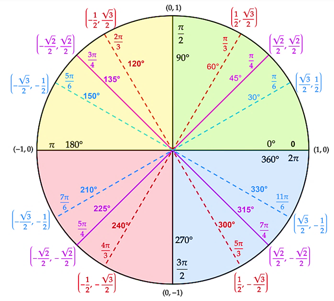
តារាងតម្លៃត្រីកោណមាត្រ
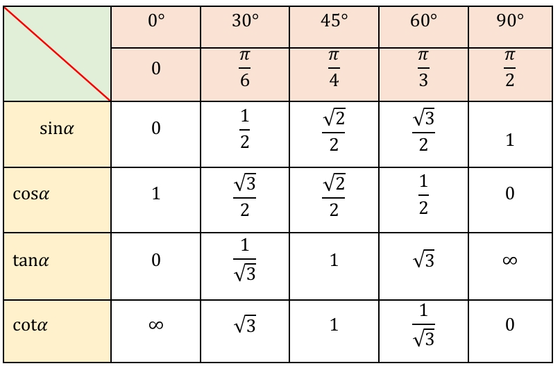